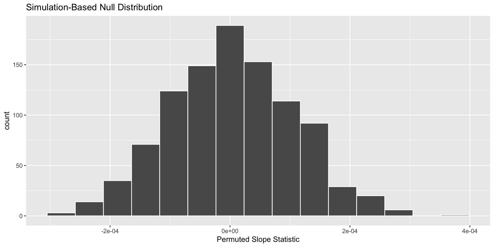
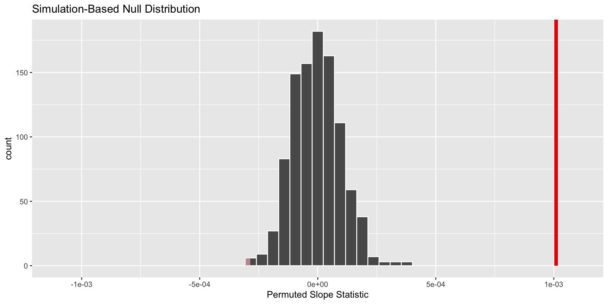
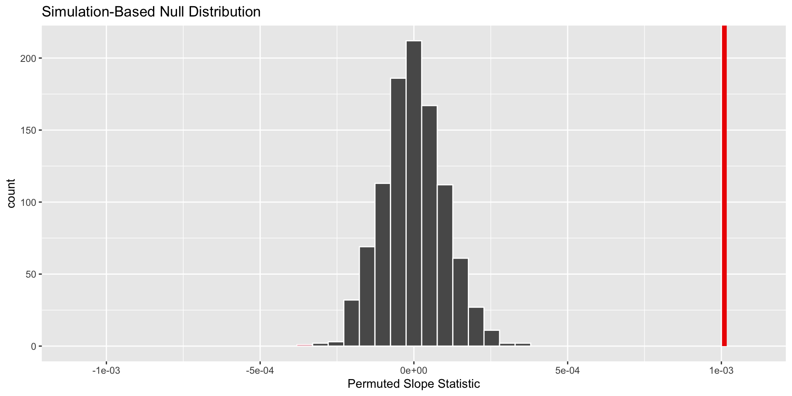

🧑🏽🔬 P-values & Hypothesis Tests
Plan for the rest of the quarter
Weeks 8, 9, & 10
Week 8
- Dig deeper into model conditions
- Learn about One-Way ANOVA
- Compare “visual” model selection with p-value model selection (Stat Critique #2)
Week 9
- Learn about simulation-based and theory-based inference for one-way ANOVA
- First draft of Final Project
Week 10
- Learn about two-way ANOVA
- Finish Final Project (poster)
Upcoming Deadlines
- Lab 4 revisions are due on Friday (May 16)
- Lab 3 second revisions are due on Friday (May 16)
Revision Deadlines
If you did not submit revisions by the deadline (or forgot to include your reflections), your assignment is not eligible for additional revisions.
you…
- understand the importance of sampling variability
- know about using confidence intervals to estimate a range of plausible values for the population parameter
- want to know how p-values fit in
What if I want to know if the population parameter differs from a specific value?
Hypothesis test!
Hypothesis test goal:
Assess how different what we saw in our data is from what could have happened if the null hypothesis was true*
*For hypothesis tests, we live in an alternative universe where \(H_0\) is true
How can we approximate what could have happened if the null was true?
Permutation!
A Permutation Resample
Assumes the original sample is “representative” of observations in the population
Uses the original sample to generate new samples that might have occurred if the null hypothesis was true.
We can use statistics from these resamples to approximate the true sampling distribution under the null!
Why do we want a sampling distribution?
Testing a Population Parameter
Like before, we are interested in knowing how a statistic varies from sample to sample.
Knowing a statistic’s behavior helps us make better / more informed decisions!
This helps us know what statistics are more or less likely to occur if the null hypothesis is true.
p-values
Quantify how “surprising” what we saw in our data is, if the null hypothesis was true
How do I get a p-value?
Permuting!
From your original sample, separate the \(x\) values from the \(y\) values.
Create new ordered pairs by randomly pairing \(x\) values with \(y\) values (permuting the labels).
This is your permuted resample.
- Repeat this process many, many times.
- Calculate a numerical summary (e.g., slope) for each permutation resample.
These are your permuted statistics.
Permutation Distribution
definition: a distribution of the permuted statistics from every permuted resample
Displays the variability in the statistic that could have happened with repeated sampling, if the null hypothesis was true.
Approximates the true sampling distribution under the null!
How do I get my p-value?
Compare the observed statistic with the statistics produced assuming the null hypothesis was true.
A p-value summarizes the probability of obtaining a sample statistic as or more extreme than what we observed, if the null hypothesis was true.
What is one similarity and one difference between a permutation distribution and a bootstrap distribution?
Similarity
Distributions of sample statistics
Use resampling to see variability
Approximate a sampling distribution
Use observed data
Difference
Permutation distributions assume \(H_0\) is true
Bootstrapping resamples with replacement
Exploring the hbr_maples dataset!

stem_length: a number denoting the height of the seedling in millimeters
stem_dry_mass: a number denoting the dry mass of the stem in grams

What condition do we need to be worried about?
In this sample of 359 sugar maples…
\[\widehat{\text{stem dry mass}} = -0.043 + 0.001 \times \text{stem length}\]
What slope could have happened if there was no relationship between stem length and stem dry mass?
Generating a permuted resample and calculating permuted statistics
Step 1: specify() your response and explanatory variables
Step 2: hypothesize() what would happen under the null
Step 3: generate() permuted resamples
Step 4: calculate() the statistic of interest
Step 1: Specify your variables!
Step 2: State your hypothesis!
"independence" – the assumed relationship between the explanatory and response variables under the null hypothesis
Independence of variables
Note! This is different from assuming your observations are independent!
Step 3: Generate your resamples!
reps – the number of resamples you want to generate
"permute" – the method that should be used to generate the new samples
Step 4: Calculate your statistics!
Your turn!
Why is the hypothesize() function used to make a null distribution but not for a bootstrap distribution?
What does the null = "independence" input in hypothesize() mean? What is it assuming about the variables declared in the specify() step?
The final product
Is our observed statistic unlikely if the null hypothesis was true?
Two-sided Alternative
If our alternative hypothesis is two-sided, what is missing from the plot?
The p-value is…
Warning: Please be cautious in reporting a p-value of 0. This result is an approximation
based on the number of `reps` chosen in the `generate()` step.
ℹ See `get_p_value()` (`?infer::get_p_value()`) for more information.# A tibble: 1 × 1
p_value
<dbl>
1 0Why did we get a warning?
How do we interpret a p-value?
Need:
- probability of what we saw in the data
- assuming the null hypothesis is true
The probability of observing a slope statistic (for the relationship between stem length and stem dry mass) as or more extreme than what was observed is less than 1 in 1000, if there was no relationship between a sugar maple’s stem length and stem dry mass.
Decision versus Conclusion
Decision
At an \(\alpha\) of 0.05 and a p-value of less than 0.001, we would reject \(H_0\).
Conclusion
We conclude that there is a linear relationship between the stem length and stem dry mass for sugar maples in the Hubbard Brook Experimental Forest.
Lab 7
Today’s Data
“One of the best-known patterns in biogeography is Bergmann’s rule. It predicts that organisms at higher latitudes are larger than ones at lower latitudes. Many organisms follow Bergmann’s rule, including insects, birds, snakes, marine invertebrates, and > terrestrial and marine mammals. What drives Bergmann’s rule? Bergmann originally hypothesized that the organisms he studied, birds, were larger in the colder, higher latitudes due to heat-conservation. But the heat-conservation hypothesis relies on internal regulation of body temperature and therefore does not apply to ectotherms, some of which also follow Bergmann’s rule.”

Research Question
What is the relationship between a Fiddler Crab’s body size (carapace width) and the latitude in which it lives?
Accessing Lab 7
Step 1: Both members of your group need to join your group workspace (link posted in the Announcements of your group)
Roles
You will be trading off roles in the middle of the lab! One person will do the hypothesis test coding and one person will do the confidence interval coding!
Step 2: One member of your group needs to follow these instructions to copy the Lab 7 project into your group’s workspace
Step 3: Both members open the Lab 7 assignment in your group workspace!
Step 4: Follow the final instructions to activate collaborative editing in the document.
Source Editor
You need to be in the source editor (not the pretty one) to use collaborative editing!